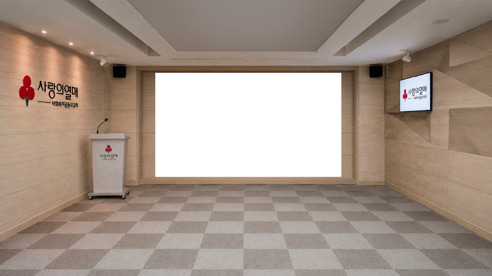

안건 2 · 큐 관리 시스템
추가 개발 필요
실제로 쓰실 큐시트를 오늘 정해 주십시오
지금 보시는 구성은 귀사가 주신 사회자 시나리오를 기반으로 만든 가안입니다. 구간 · 순서와 대괄호로 적힌 조명 · 음향 신호를 그대로 옮겼지만, 실제 행사에서 쓸 기본 구성은 다를 수 있습니다. 콘솔을 클릭하시면 방향키로 직접 넘겨 보실 수 있습니다.

표지
/ 07
1 / 1